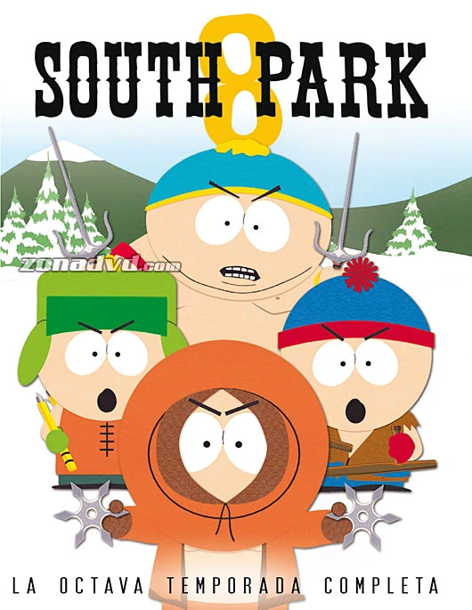

'South Park' gira en torno a Kyle, Cartman, Stan y Kenny que son cuatro amigos bocazas que crecen en un pueblo surrealista llamado South Park en Colorado, un pueblo cuyos ciudadanos parecen ser más políticamente correctos que el resto. Kyle Broflovski es el más listo del grupo después de Cartman y tiene más sentido común que los demás en su forma de actura en la vida cotidiana; Stan Marsh, se podría decir que es el más normal de grupo y muy maduro a pesar de su edad. Es amable y también un tanto nervioso; Kenny McCormick es un niño de clase social baja que siempre muere en todos los episodios; y Eric Cartman es como el antagonista de ambos, un niño gordo, egoísta, malcriado, racista y xenófobo que rivaliza siempre con Kyle. Esta animación de comedia políticamente incorrecta está creada por Trey Parker y Matt Stone y usan chistes que suelen ser satíricos e irreverentes usando parodias con referencias a la cultura popular, escatología, humor negro, violencia y situaciones surrealistas.


El creador y productor ejecutivo de “South Park”, Trey Parker, cocreador de la galardonada serie animada “South Park”, conoció a Matt Stone en la Universidad de Colorado en Boulder. Juntos, su trabajo más reconocido, “South Park”, la serie animada que sigue las desventuras de un grupo de niños en el pueblo tranquilo y disfuncional de South Park, Colorado
No hay un solo episodio débil en la temporada ocho de parque del Sur. Y las joyas que contiene son los clásicos: la «Pasión del judío» centrada en Mel Gibson, el «Good Times with Weapons» inspirado en el anime, la sátira política atemporal y eterna «Douche and Turd» y las vacaciones especial «Woodland Critter Christmas». El episodio en el que Jimmy toma esteroides, el episodio en el que Cartman piensa que es clarividente, el episodio en el que Cartman finge ser un robot.
En la temporada 13, los episodios están inteligentemente equilibrados según los acontecimientos actuales: Cartman está con los piratas somalíes en «Barbanegra», Ike ve los fantasmas de personajes famosos en «Celebridades muertas», Stan compite con balleneros japoneses en «Whale Whores», etc. Episodios centrados en el personaje: Butters se convierte en un proxeneta en «Butters ‘Bottom B ****», Kyle lo pasa mal en el parque acuático de «Pee», Cartman roba el chiste de Jimmy en «Fishsticks».


Stan Marsh suele ser el líder del grupo y es representado como un personaje normal y maduro. Kyle Broflovski es su mejor amigo, es judío y es el personaje con mayor ingenio de los cuatro. Eric Cartman se presenta como el antagonista principal de la serie; un chico gordo, egoísta, malcriado, racista, antisemita y xenófobo. El cuarto chico, Kenny McCormick, procede de una familia muy pobre y debido a que su anorak le tapa la boca, el espectador no entiende lo que dice.

Toallín es una toalla para hablar que fue diseñada genéticamente por Tynacorp. Por lo general, se lo ve aparecer de la nada para dar consejos sobre toallas a los ciudadanos de South Park o para drogarse. El tema musical de Popeye se reproduce cada vez que Toallín se droga.

Jerome McElroy, comúnmente conocido como Chef. Era más famoso por ser el chef de la cafetería de la Escuela Primaria de South Park y a quien acudían los chicos en busca de consejos, lo que a menudo lo hacía irrumpir en canciones sobre sexo.

La Alcaldesa McDaniels es la alcaldesa de South Park. Es altamente incompetente y está más interesada en obtener buena publicidad sobre ella misma para salir de ese "asqueroso pueblo", como ella lo denomina.
Herbert Garrison, más conocido como el Sr. Garrison, también fue conocido como Janet Garrison después de una operación de cambio de sexo, es el maestro de cuarto grado de la Escuela de South Park, era el 45ª y Ex-Presidente de los Estados Unidos.

Gerald Broflovski es el esposo de Sheila Broflovski el padre de Kyle Broflovski y padrastro de Ike Broflovski. Operando bajo el alias de Cazaputas42, juega un papel antagónico clave en la Temporada Veinte. Lleva el nombre del padre de Matt Stone, Gerald W. Stone.
Liane es la madre de Eric Cartman y es una persona de buen carácter, pero con una ventaja definida para ella. Su voz suele ser amable y suave y sus acciones generalmente son para ayudar a otros, especialmente a su hijo.

Phone Destroyer es un videojuego de rol de acción freemium desarrollado por
RedLynx en colaboración con South Park Digital Studios y Ubisoft Pune, y publicado por Ubisoft.
Fue publicado tanto en iOS como en Android el 9 de noviembre de 2017.
El objetivo principal del juego es "destruir" el teléfono del rival, a través de batallas entre los personajes de la serie de televisión South Park, comandados por el "niño nuevo".
Dichos personajes están representados por cartas coleccionables, las que se pueden combinar con otras para mejorar sus características. Para poder jugar, el jugador debe formar un mazo de 12 cartas.
Hay diferentes versiones de cada personaje que el jugador puede desbloquear abriendo paquetes de cartas, como Stan que está vestido como un programa de Tron,
o Cartman que está vestido como sheriff o AWESOM-O. Cada carta tiene su propia habilidad especial y su propósito único.
El niño nuevo puede subir de nivel (puntos de salud y ataque) ganando experiencia, ya sea a través de la combinación de cartas, o a través de donaciones.